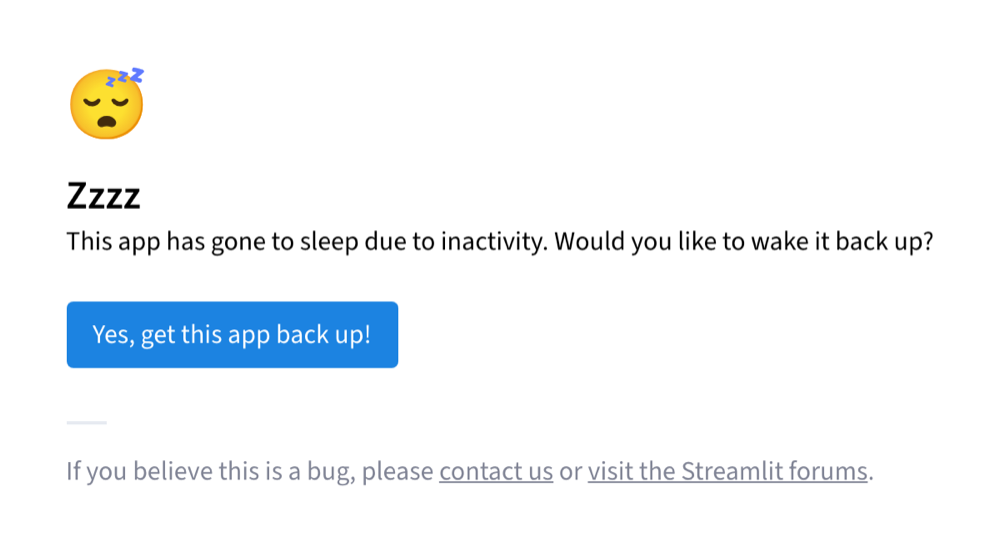
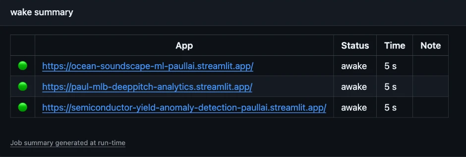

streamlit-wake
A command-line tool and GitHub Action that keeps free Streamlit apps from falling asleep, so the link people click actually opens the app.
The problem
All kinds of people deploy apps on Streamlit Community Cloud: students sharing class projects, data scientists showing a model demo, researchers publishing an interactive figure, job seekers linking a portfolio from their résumé. It is free and takes minutes to set up, but sooner or later everyone hits the same problem. After about 12 hours without visitors, Streamlit puts the app to sleep, and the next person who opens the link lands on this page instead of the app:

The common advice online is to point an uptime monitor or a curl cron job at the
app. That does not work, for two reasons. The sleep page is an ordinary web page that returns
HTTP 200, so a ping cannot tell a sleeping app from a running one. And Streamlit only restarts the
app when someone presses "Yes, get this app back up!" in a browser, which a ping never
does.
So streamlit-wake behaves like a visitor. It opens the app in a real (headless) browser, presses the button if it is there, and waits until the app has actually rendered. Put on a GitHub Actions schedule, it keeps the apps awake without anyone's laptop being on, and GitHub sends an email if one of them breaks. It started as a small script that kept a few personal apps awake, and grew into a general tool that works for any public Streamlit app.
Install
It's a Python package managed with uv. Add it to a project, then download the
Chromium build it drives (one time, about 100 MB):
uv add "git+https://github.com/Paul-Lai0111/streamlit-wake.git"
uv run streamlit-wake install-browserOr install it as a standalone command with
uv tool install git+https://github.com/Paul-Lai0111/streamlit-wake.git and drop the
uv run prefix.
Usage
Wake an app right now
Handy right before a demo, an interview or pasting a link into a chat, so the app is already warm when the other person opens it:
$ streamlit-wake check https://paul-mlb-deeppitch-analytics.streamlit.app/ https://ocean-soundscape-ml-paullai.streamlit.app/
Visiting 2 app(s), up to 240s each...
🟢 awake 5s https://paul-mlb-deeppitch-analytics.streamlit.app/
🟢 awake 5s https://ocean-soundscape-ml-paullai.streamlit.app/
Done: 2 up (0 woken), 0 failed.
If an app was asleep you'll see 🔵 woken instead, usually after 30 to 90 seconds
while it boots.
Keep a list of apps
Put your URLs in apps.txt, one per line. Lines starting with # are
comments, and the https:// is optional.
# Streamlit apps to keep awake
https://paul-mlb-deeppitch-analytics.streamlit.app/
ocean-soundscape-ml-paullai.streamlit.app$ streamlit-wake list https://paul-mlb-deeppitch-analytics.streamlit.app/ https://ocean-soundscape-ml-paullai.streamlit.app $ streamlit-wake run $ streamlit-wake run other-apps.txt --timeout 300 --url https://one-more.streamlit.app/
Put it on a schedule
This is the part that solves the problem. Run init inside any GitHub repository
you own (a portfolio repo, or the app's own repo). It writes
.github/workflows/wake.yml and adds the URLs to apps.txt:
$ cd my-portfolio $ streamlit-wake init https://paul-mlb-deeppitch-analytics.streamlit.app/ --every 6 wrote .github/workflows/wake.yml wrote apps.txt (1 app(s)) Next: commit both files and push. Then open the Actions tab on GitHub and press 'Run workflow' once to try it. $ git add .github/workflows/wake.yml apps.txt $ git commit -m "Keep my apps awake" && git push
From then on GitHub runs it every 6 hours. Each run leaves a summary table:

All commands
| Command | What it does |
|---|---|
check URL... | Wake the given apps now. |
run [FILE] | Wake every app in FILE (default apps.txt). --url adds more. |
list [FILE] | Print the URLs run would visit, without opening a browser. |
init [URL...] | Write the GitHub Actions workflow and add URLs to apps.txt. --every HOURS (default 6), --force to overwrite. |
install-browser | Download the Chromium build Playwright uses. |
run, check and init take --timeout SECONDS
(default 240). run and check exit with status 1 if any app failed,
which is what turns a scheduled run red and makes GitHub email you.
What the statuses mean
| Status | Meaning |
|---|---|
🟢 awake | The app was already running. |
🔵 woken | It was asleep. The button was pressed and the app finished starting. |
🔴 failed | Nothing loaded before the timeout. Usually the app crashed or needs a reboot from share.streamlit.io. |
Without installing anything
The repo is also a GitHub Action, so you can skip the CLI and add one step to a workflow:
- uses: Paul-Lai0111/streamlit-wake@v1
with:
urls: |
https://your-app-name.streamlit.app/How it works
for each URL open the page in headless Chromium (Playwright) ├─ Streamlit's app container is on the page ...... awake 🟢 ├─ the wake button is on the page → press it, │ keep polling until the app container shows ... woken 🔵 └─ neither within the timeout ..................... failed 🔴
The app lives inside an iframe on *.streamlit.app, so the check looks for
[data-testid="stAppViewContainer"] in every frame, not just the top page. All apps
share one browser, and a crash on one app is recorded as failed without stopping
the others.
A few decisions that came from actually running it:
- Every 6 hours, at minute 17. Apps sleep after ~12 hours, and GitHub often starts scheduled runs late, especially on the hour. Six hours leaves plenty of margin.
- The 60-day rule. GitHub disables schedules in a public repo after 60 days without commits. The generated workflow re-enables itself through the API on every run.
- Private repos are fine. A run takes 1–2 minutes, so a 6-hour schedule uses roughly 250–400 of the 2,000 free Actions minutes a month.
Limits
- Apps that require a Streamlit login show a sign-in page, so they come back as
failed. - Other hosts that sleep differently (Render, Hugging Face Spaces) aren't supported.
- Please use it for apps people actually visit. Streamlit Cloud is free, and it should stay that way.